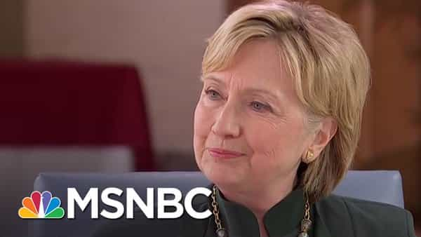
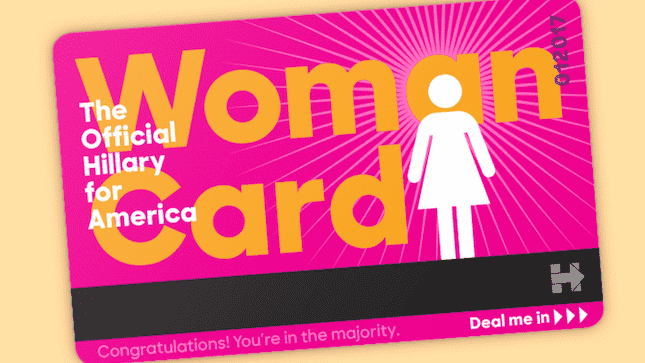
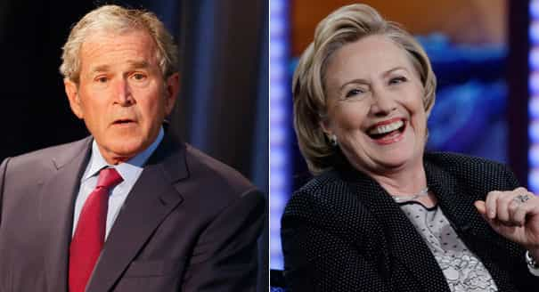

< < < Back
Is Hillary Clinton Trying To Sabotage Her Campaign Against Donald Trump? – Return Of Kings
Ever since Donald Trump began dominating the Republican presidential primaries, cuckservatives and pundits have asserted that he has no chance of winning against Hillary Clinton, the presumptive Democratic nominee. Trump’s nationalist views on trade and border security have supposedly made him incredibly unpopular among Latinos, while his “sexist” remarks about women have hurt him among female voters. While these same pundits failed to predict Trump’s victory in the Republican race, they keep assuring us that this time, they have it right.
Common sense would dictate that Trump—a man who knocked out over a dozen challengers to claim the GOP nomination, all while the party machinery was aligned against him—would have a few tricks up his sleeve for ol’ Hilldog, but the problem is that common sense is uncommon. Hillary Clinton’s actions in the past week have indicated that she’s trying to sabotage her own campaign and ensure Trump’s victory in the fall.
Donald Trump is easily one of the finest political minds in American history, able to provoke his enemies into destroying themselves with psychological warfare. Trump’s “low-energy” jab at Jeb Bush sent his campaign into a death spiral and destroyed his family’s reputation; his “Little Marco” taunting provoked Rubio into embarrassing himself by making “mine’s bigger than yours” jokes; his constant refrain of “Lyin’ Ted” made Cruz have a nervous breakdown on live television.
Much in the same way that UFC fighter Conor McGregor destroyed Jose Aldo’s spirit with nonstop trash talk, softening him up for an easy win, Trump is manipulating Hillary into shooting herself in the foot.
Hillary Gets Trumped

Ever since he began his campaign, the Donald has hammered Hillary on her corruption, her enabling of her husband’s infidelity and alleged rapes, and her ties to big money Wall Street donors. The first sign that “Crooked Hillary” is cracking under pressure can be seen above, when she recently changed her haircut to look like Trump’s. Fox News anchor Megyn Kelly also changed her haircut to look more professional after Trump ridiculed her as a “bimbo” and a “lightweight.”
Following this, in response to Trump’s accusation that Hillary was playing the “woman card,” her campaign issued a “Woman Card” to mock the incident. However, as Scott Adams pointed out, the design of the Woman Card is an absolute disaster:

Not only is the “woman” symbol on the front the same as a public restroom’s (thus marrying Clinton’s image with that of a toilet), the magnetic strip calls to mind Grandma Hillary’s inability to navigate the advanced technology of the turnstiles in the New York City Subway.
Furthermore, the Hillary campaign has opted to push back against Trump by arguing that he’s too “risky” to be entrusted with the presidency, dubbing him “Dangerous Donald.” For a candidate who says he’s going to shake up the Washington consensus and change how government operates, “risky” borders on being an endorsement. Similarly, an ad showing how Republican establishment figures despise Trump actually helps him since he’s built his campaign on dismantling the corrupt, impotent GOP establishment.
Finally, in a move that is absolute poison to her electoral chances, Hillary has begun wooing Bush family donors, following the news that former presidents George H.W. Bush and George W. Bush will not participate in the election. Dubya is still a widely reviled figure among the left; indeed, when I went to a Bernie Sanders rally in South Bend, Indiana last week, there was a vendor selling “Hillary is Bush” buttons. Given that Hillary is still competing with Sanders for the nomination—and his supporters regard her as a warmonger and a closeted Republican—cozying up to the Bushes is the absolute worst thing she could do.
Hillary’s Political Suicide

While Hillary still leads Trump in general election polling, her numbers have been eroding continuously for the past few months, and new polls now show the Donald leading her in crucial swing states such as Ohio. Not only that, for all of #NeverTrump’s whining, polling shows that the vast majority of registered Republicans will vote for Trump in November:
https://twitter.com/Ricky_Vaughn99/status/729896078116564992
Hillary’s self-sabotage is no doubt playing a role in her falling poll numbers, to the point where her own supporters are starting to panic over her inept campaigning.
Why is Hillary ruining her own chances of being elected? Part of it is because she’s always been an unlikable, talentless campaigner: she lost the 2008 nomination to Barack Obama despite being better-funded and known, and she’s barely treading water against Bernie Sanders despite the primary race being rigged for her benefit. However, Trump’s psychological warfare has also played a big role: by bringing the FBI investigation into her emails to the forefront, he has made her fearful of being indicted, leading her to sabotage her campaign as a result.
While it’s still possible that Hillary will be able to overrun Trump at the polls due to America’s increasingly non-white demographics, her constant own goals are crippling her campaign. Political experts who claim she has the race in the bag should be roundly ignored and mocked.
Read More: Will A Crushing Victory In New York Reinvigorate Donald Trump’s Campaign?